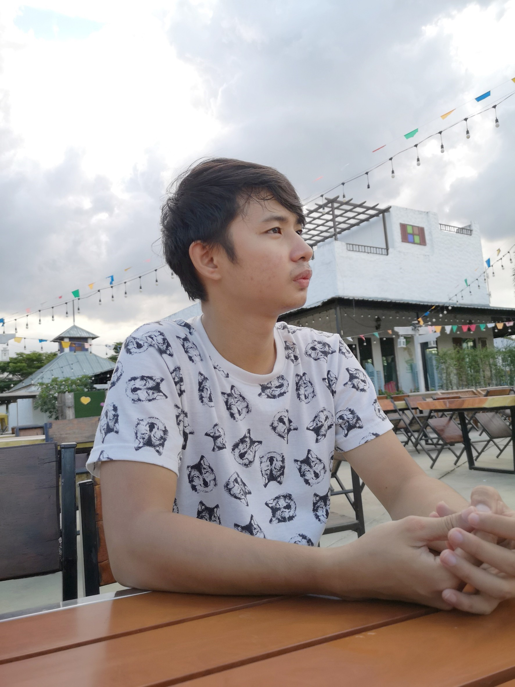

Senior Developer / Squad LeadSenior Developer / Squad Lead
Senior software engineer and squad lead with 8+ years of C# and .NET experience, building backend and frontend systems across industries. I led the team behind IPOP, HPIMS and a single-sign-on user management system at Fusion Solution, then moved into workflow-automation R&D at Lightwork AI. Today I lead a squad at Terra Digital Ventures, delivering an NLP skills-assessment platform on Angular, NestJS, Kafka and Azure.Senior software engineer และ squad lead ประสบการณ์ C# และ .NET กว่า 8 ปี สร้างระบบทั้ง backend และ frontend ในหลายอุตสาหกรรม เคยนำทีมทำ IPOP, HPIMS และระบบ user management แบบ single sign-on ที่ Fusion Solution ก่อนขยับมาทำ R&D ด้าน workflow automation ที่ Lightwork AI ปัจจุบันนำ squad ที่ Terra Digital Ventures ส่งมอบแพลตฟอร์มประเมินทักษะด้วย NLP บน Angular, NestJS, Kafka และ Azure

Terra Digital Ventures · 10+ yearsปี
Full-stack developmentพัฒนา Full-stack
Workflow automationWorkflow automation
Cloud & CI/CDCloud และ CI/CD
Things I madeสิ่งที่ฉันสร้าง
9 projects, taped in. Tap any picture for the full page.9 โปรเจกต์ที่แปะไว้ แตะรูปไหนก็ได้เพื่อเปิดดูทั้งหน้า
A field-team app for CP-Meiji: work schedules, map check-ins and reports, with a web companion.Mobile app สำหรับทีมภาคสนามของ CP-Meiji มีตารางงาน เช็กอินบนแผนที่ และรายงาน พร้อม web app คู่กัน
A games results site for the Sports Authority of Thailand: schedules, medal tables, athlete lists and brackets.เว็บผลการแข่งขันกีฬาของการกีฬาแห่งประเทศไทย ทั้งตารางแข่ง ตารางเหรียญ รายชื่อนักกีฬา และผังการแข่งขัน
A competition-management system for the Sports Authority of Thailand, including athlete and official roster checks.ระบบบริหารจัดการการแข่งขันของการกีฬาแห่งประเทศไทย รวมถึงการตรวจสอบรายชื่อนักกีฬาและเจ้าหน้าที่
Interactive primary-school lessons for Thai and English, with pre-tests, content and post-tests — built as teaching media.บทเรียนโต้ตอบระดับประถมวิชาภาษาไทยและอังกฤษ มีแบบทดสอบก่อนเรียน เนื้อหา และแบบทดสอบหลังเรียน สร้างเป็นสื่อการสอน
A portal and User Management System for Ajinomoto Sales (Thailand): reports, external links and access control.Portal และ User Management System ของ Ajinomoto Sales (Thailand) รวมรายงาน ลิงก์ภายนอก และการควบคุมสิทธิ์
A herbal-product database system for the Department of Thai Traditional and Alternative Medicine.ระบบฐานข้อมูลผลิตภัณฑ์ยาสมุนไพร กรมการแพทย์แผนไทยและการแพทย์ทางเลือก
Website for Aims Clinic, a beauty clinic in Rama 3, Bangkok: a skin-analysis questionnaire as the starting point for a consultation, and pages for its 5 service categories and 16 programs.เว็บไซต์ของเอมส์คลินิก คลินิกความงามที่พระราม 3 กรุงเทพฯ มีแบบประเมินผิวเป็นจุดเริ่มต้นของการปรึกษา และหน้าบริการ 5 หมวด 16 โปรแกรม
Senior Developer / Squad LeadSenior Developer / Squad Lead
Terra Digital Ventures Co., Ltd. · Full-timeFull-time
Jan 2024 — nowม.ค. 2024 — ปัจจุบัน
Senior Developer and Squad Lead on the NLP system (Back office AIS), leading the squad while building features hands-on.Senior Developer และ Squad Lead ของระบบ NLP (Back office AIS) นำ squad พร้อมลงมือพัฒนา feature เอง
Designed and built new features for the NLP system (Back office AIS): a platform that assesses individual skills, highlights strengths and gaps, and tracks progress by version.ออกแบบและพัฒนา feature ใหม่ของระบบ NLP (Back office AIS) แพลตฟอร์มประเมินทักษะรายบุคคล ชี้จุดแข็งและช่องว่าง (gap) และติดตามความก้าวหน้าตามเวอร์ชัน
Built the frontend in Angular on a NestJS REST API, with Kafka, TMF, Azure Storage and MongoDB.พัฒนา frontend ด้วย Angular เชื่อมกับ NestJS REST API ร่วมกับ Kafka, TMF, Azure Storage และ MongoDB
Managed CI/CD with GitHub Actions and Argo, deployed on Azure Cloud.ดูแล CI/CD ด้วย GitHub Actions และ Argo deploy บน Azure Cloud
Angular
NestJS
Kafka
MongoDB
Azure
Argo
Senior DeveloperSenior Developer
MSC Sittipol Co., Ltd.
Oct 2023 — Jan 2024ต.ค. 2023 — ม.ค. 2024
Loyalty system: worked on Maxcard for PT, the petrol-station chain.ระบบสะสมแต้ม: พัฒนา Maxcard ให้ PT (ปั๊มน้ำมัน)
Senior DeveloperSenior Developer
Zortout Co., Ltd.
Oct — Dec 2023ต.ค. — ธ.ค. 2023
E-commerce library: built a central API that pulls data from Shopee, TikTok and Lazada.E-commerce library: สร้าง API กลางสำหรับดึงข้อมูลจาก Shopee, TikTok และ Lazada
Shopee
TikTok
Lazada
Senior Developer / R&DSenior Developer / R&D
Lightwork AI Co., Ltd. · Full-timeFull-time
Apr 2019 — Jul 2023เม.ย. 2019 — ก.ค. 2023
R&D on the company's internal systems, focused on workflow automation that supports the RPA team in delivering client solutions.งาน R&D ระบบภายในบริษัท เน้น workflow automation เพื่อสนับสนุนทีม RPA ในการส่งมอบโซลูชันให้ลูกค้า
Led R&D on workflow-automation products: designed the core of a WPF / C# app on Windows Workflow Foundation, published a library to a private NuGet feed, and built Windows Services that monitor licensing and permissions with Application Insights logging.นำงาน R&D ผลิตภัณฑ์ workflow automation ออกแบบ core ของแอป WPF / C# บน Windows Workflow Foundation publish library ลง NuGet feed ส่วนตัว และสร้าง Windows Services ตรวจสอบ license และ permission พร้อมบันทึก log ด้วย Application Insights
Built an automated bank-statement system on that platform: Vue.js frontend, Nest.js microservices, MySQL, Azure Key Vault, with CI/CD on Bitbucket Pipelines and Azure App Services.สร้างระบบ bank statement อัตโนมัติบนแพลตฟอร์มดังกล่าว frontend Vue.js, backend Nest.js แบบ microservices, ฐานข้อมูล MySQL, เก็บ secret ด้วย Azure Key Vault และทำ CI/CD ด้วย Bitbucket Pipelines บน Azure App Services
WPF
WWF
NuGet
Vue.js
Nest.js
MySQL
Azure
Development LeadDevelopment Lead
Fusion Solution Co., Ltd. · Full-timeFull-time
Sep 2017 — Apr 2019ก.ย. 2017 — เม.ย. 2019
Led the team and gathered requirements with clients including CP-Meiji, Ajinomoto and the Department of Thai Traditional and Alternative Medicine, working in Agile.นำทีมและรวบรวมความต้องการร่วมกับลูกค้า เช่น CP-Meiji, Ajinomoto และกรมการแพทย์แผนไทยและการแพทย์ทางเลือก ทำงานแบบ Agile
Data analysis and reporting system, with Power BI reports.ระบบ data analysis และ reporting พร้อมรายงาน Power BI
IPOP: employee system for leave reports, motivation and supervisor tasks, with a React Native check-in app on the App Store and Play Store.IPOP ระบบพนักงาน (รายงานการลา แรงจูงใจ งานของหัวหน้า) พร้อมแอป React Native เช็กอินบน App Store และ Play Store
User management system: central site with SSO through ADFS and LDAP, plus SMS / OTP and daily data migration with SSIS.ระบบ user management เว็บกลางที่ทำ SSO ผ่าน ADFS และ LDAP พร้อม SMS / OTP และ migrate ข้อมูลรายวันด้วย SSIS
HPIMS: central database of herbal products.HPIMS ฐานข้อมูลกลางผลิตภัณฑ์สมุนไพร
Vue.js
ASP.NET MVC
SQL Server
React Native
ADFS / LDAP
Power BI
Application TechnologistApplication Technologist
Fusion Solution Co., Ltd. · Full-timeFull-time
Nov 2016 — Aug 2017พ.ย. 2016 — ส.ค. 2017
SAT: website and mobile app for sports competitions (boxing, karate, wushu) covering schedules, competition types and results.SAT เว็บไซต์และ mobile app สำหรับการแข่งขันกีฬา (มวย คาราเต้ วูซู) ครอบคลุมตารางแข่ง ประเภทการแข่ง และผลการแข่งขัน
F-NET: website, reports and migration of legacy data for the Office of Police Forensic Science.F-NET เว็บไซต์ รายงาน และการ migrate ข้อมูลจากระบบเดิมของสำนักงานพิสูจน์หลักฐานตำรวจ
ASP.NET
PhoneGap / Cordova
WCF
SSRS
SSIS
DevExpress
ProgrammerProgrammer
SME Bank Thailand · InternshipInternship
Jan — Apr 2015ม.ค. — เม.ย. 2015
Designed and built a leave and reporting system, working with users and drawing ERD, class, sequence and user-story diagrams.ออกแบบและพัฒนาระบบลางานและรายงาน ทำงานร่วมกับผู้ใช้ และเขียนแผนภาพ ERD, class, sequence และ user story
PHP
MySQL
Crystal Reports
Flash DeveloperFlash Developer
KR Instruction Media · Part-timePart-time
Sep 2013 — Aug 2016ก.ย. 2013 — ส.ค. 2016
Designed and built animation projects for customers in ActionScript, and gathered user requirements.ออกแบบและพัฒนางานแอนิเมชันให้ลูกค้าด้วย ActionScript และรวบรวมความต้องการของผู้ใช้
Thesis: Room Reservation System for the Faculty of Industrial Technology (Raspberry Pi access control, C++ and C#).วิทยานิพนธ์: ระบบจองห้องเรียน คณะเทคโนโลยีอุตสาหกรรม (ควบคุมการเข้าถึงด้วย Raspberry Pi, C++ และ C#)
In my toolboxในกล่องเครื่องมือ
Technicalเทคนิค
C# / .NET / JavaScript / TypeScript
Vue / React / React Native / Node.js / NestJS
WPF / WCF / WF / RPA
REST API / Microservices / Test Automation (Playwright)
CI/CD / Database / SQL / Power BI
Otherอื่นๆ
Web Design / Design Thinking / Research
SA / OOAD / OOP
Critical Thinking / Problem-Solving
Communication / Team Leadership
Write to meเขียนมาหาฉัน
Got a question, or a system that needs building? A short email is perfect.มีคำถาม หรือมีระบบที่ต้องสร้าง ส่งอีเมลสั้น ๆ มาได้เลย